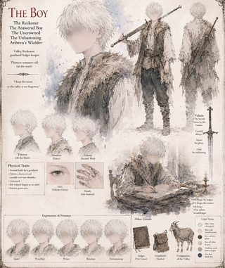
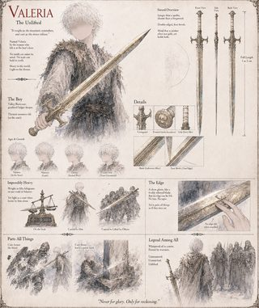
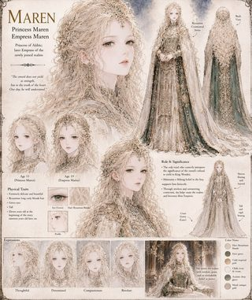

Case File
Stands alone. No other case needs to be read first. Choose another by its promise.
- Pages — 102
- Genre — Epic Fantasy · War & Military Fiction
His mother taught him two things: pray properly, and keep the ledger honest. Neither one prepares a thirteen-year-old boy for the morning raiders burn his valley a third time — and neither one explains why, when he climbs the one hill still standing and asks Heaven for help, Heaven actually answers.
What is placed in his hands is a sword that never dulls and never explains itself, given by a woman who offers her own name for the blade — Valeria — and nothing else, before vanishing as though she was never anyone's to keep. He does not become a knight. He is never crowned. Over the long, unlikely span of a life that two kingdoms will go to war over and a faith will eventually be built to explain, he becomes something the chronicles never quite settle on a name for at all.
Sword of Valeria follows a reckoner who measures the world in honest debts, through a war he never wanted, a crown offered to him twice and refused twice, and a princess who believes in him before anyone with real power does. Around him, kings gamble kingdoms on convenient lies, a captured man's confession very nearly starts a war and then very nearly stops one, and something patient and unseen watches every part of the story the histories will later insist on getting wrong.
Spanning decades and told in the dry, exacting voice of a man who never once rounded a number in his life, this is a story about what gets remembered and what doesn't — the name of a sword outliving the name of the boy who carried it, the flattering version of a war outliving the small, petty truth that started it, and what it costs, and what it's worth, to do the right thing without needing anyone to record that you did it.
Principal Subjects


Valeria
The blade at the center of it all — impossibly heavy, unliftable by anyone but him.

Ardwen
The woman who answers the boy's prayer — and the observer behind the whole story.


King Wendric
The king who tries to seize the sword, fails publicly, and never recovers.
Additional Case Records
5 additional subjects documented
Records
-

King Wendric tries to lift Valeria.
-

Maren, alone in the court.
-

Observer 000, watching.
-

The assassin hesitates.
-

Cadmon rallies his army.
-

King Wendric's final hours.
-

Maren, deep in court intrigue.
-

The full power of Valeria.